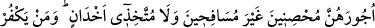

HELÂL KILINANLAR
4- Sana kendileri için nelerin helâl kılındığını soruyorlar. De ki: Bütün iyi ve temiz
şeyler size helâl kılınmıştır. Allah’ın size öğrettiğinden öğretip, avcı hâle
getirdiğiniz hayvanların sizin için yakaladıklarından da yeyin ve üzerlerine Allah’ın
adını anın (besmele çekin). Allah’tan korkun. Allah, hesâbı çabuk görendir.
5- Bugün size temiz ve iyi şeyler helâl kılınmıştır. Kendilerine kitap verilenlerin
(yahûdî, hristiyan vb. nin) yiyeceği size helâldir, sizin yiyeceğiniz de onlara helâldir.
Mü’min kadınlardan iffetli olanlar ile sizden önce kendilerine kitap verilenlerden
iffetli kadınlar da, mehirlerini vermeniz şartıyla, namuslu olmak, zinâ etmemek ve
gizli dost tutmamak üzere size helâldir. Kim (İslâmî hükümlere) inanmayı kabul
etmezse onun ameli boşa gitmiştir. O, âhirette de ziyâna uğrayanlardandır.
“Sana kendilerine nelerin helâl kılındığını soruyorlar.” Yânî, yiyeceklerden onlara
nelerin helâl olduğunu sana soruyorlar.
“De ki: Bütün iyi ve temiz şeyler size helâl kılınmıştır.” Yani temiz fıtratlı kişilere
göre pis ve iğrenç olmayan şeyler helal kılındı. Nitekim başka bir âyette şöyle
buyurulur: “O (peygamber ki) onlara güzel şeyleri helal, çirkin şeyleri haram kılar.”
(A’raf, 7/157)
İyi ve temiz diye ifâde ettiğimiz “Tayyib” lügatta lezzetli ve canın çektiği şeydir.
Lezzetli ve temiz olması güzel ahlâk ve kişilik sâhibi olan kimselere göredir. Çünkü
çölde yaşayan bedevîler, ayırım yapmaksızın bütün hayvanların etini yemeyi güzel ve
lezzetli bulurlar. İmam Fahreddin Râzî, tefsirinde böyle açıklamıştır.
“Allah’ın size öğrettiğinden öğretip avcı hâle getirdiğiniz hayvanların sizin için
yakaladıklarından da yeyin.” Yani, sizin öğrettiğinizin avladığından da yeyin.